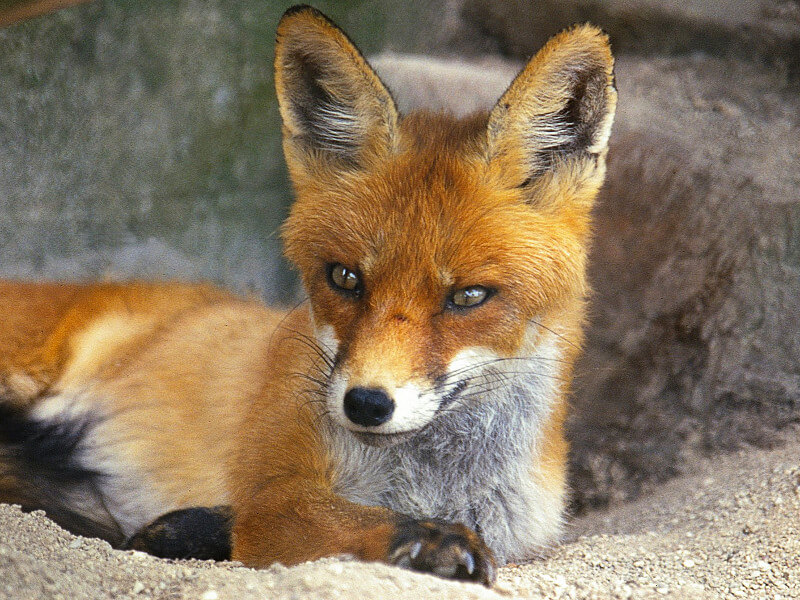
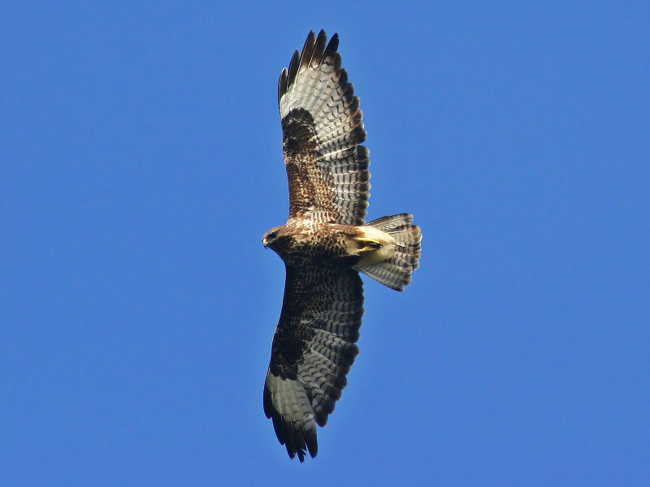
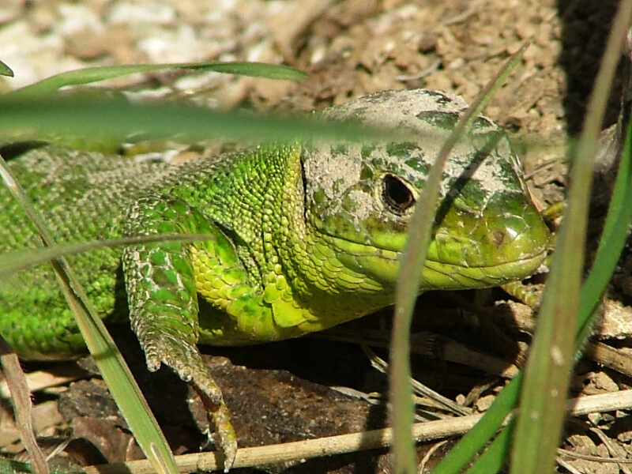
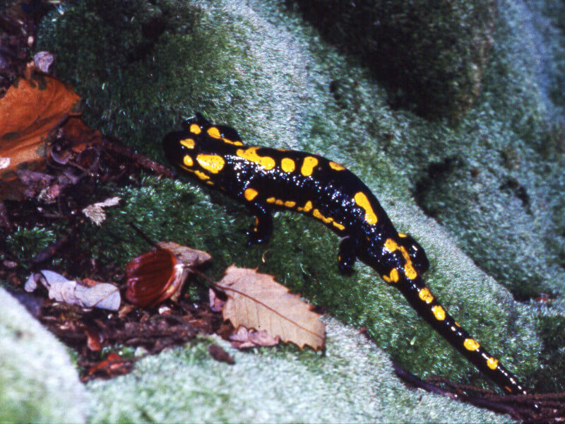
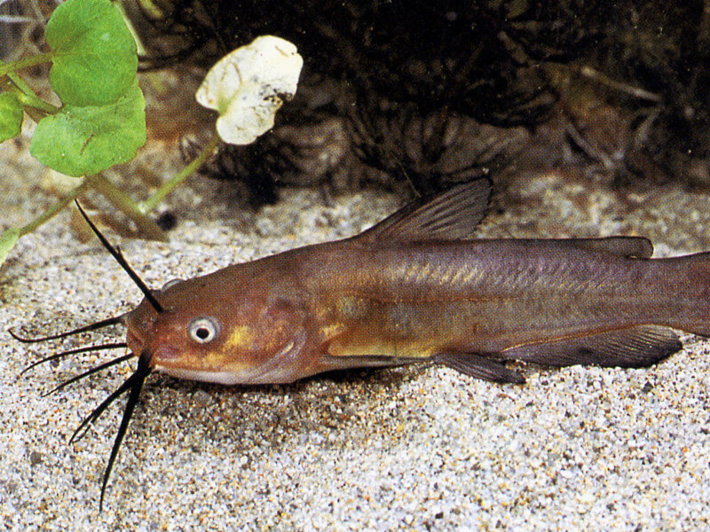
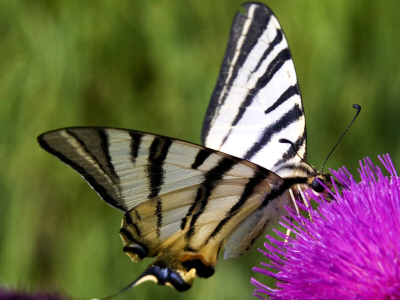

Home >> Natura e Storia
>> Fauna e Parco Natura 2000
Fauna e Parco Natura 2000
I Colli Euganei costituiscono un ambiente piuttosto diversificato per tipo e numero di specie, in particolare se confrontato
con la pianura circostante, pur essendosi verificato nel tempo un certo impoverimento.
Di seguito sono descritti in breve le classi di vertebrati e gli invertebrati più caratteristici dei Colli
Euganei. Pe maggiori informazioni e notizie, consultare il Progetto Fauna.
Mammiferi

Volpe, donnola e faina sono presenti tra i carnivori, oltre al tasso; tra i piccoli mammiferi insettivori sono comuni il
riccio, la talpa ed il toporagno; tra i roditori, il ghiro ed il moscardino. Importati dall'uomo e nel tempo
divenuti infestanti sono il daino e, soprattutto, il cinghiale.

Volpe (foto di PR Colli Euganei)
Uccelli
Oltre 120 specie segnalate tra quelle stanziali, migratrici e di passo. Nei mesi invernali i boschi ospitano la beccaccia,
il tordo bottaccio, il tordo sassello e la cesena; mentre tra la bassa vegetazione si osservano lo scricciolo,
il pettirosso, il regolo, il verdone e la cinciarella. In primavera arrivano l'upupa, il rigogolo ed il cuculo,
l'averla piccola ed il codibugnolo. Fringuelli, cardellini e la bella ghiandaia sono presenti tutto l'anno.
Nelle zone prative aperte è facile osservare la calandra, la cappellaccia ed in estate il curioso succiacapre,
uccello crepuscolare che nidifica a terra, dal volo simile a quello di un piccolo falco. I rapaci diurni
sono ben rappresentati dalla poiana; presenti pure il gheppio, lo sparviero e talvolta anche il lodolaio.
Recentemente la presenza nidificante del falco pellegrino presso il sito, di proprietà della Regione Veneto
e in gestione al Parco, a Rocca Pendice, ha confermato le potenzialità faunistiche e naturalistiche dei Colli
Euganei, tanto da giustificare il loro inserimento tra le Zone di Protezione Speciale (ZPS) europee di Rete
Natura 2000. Fra i rapaci notturni è possibile incontrare il gufo comune, la civetta, la civetta nana e il
barbagianni e l'allocco. Molto comuni nelle aree pianeggianti lungo gli scoli d'acqua e in prossimità delle
zone umide sono gli uccelli legati a questa tipologia di ambienti, tra i quali l'airone cinerino e l'airone
bianco, la garzetta e la gallinella d'acqua.

Poiana in volteggio (foto di PR Colli Euganei)
Rettili
Si annoverano tra i sauri alcune specie di lucertole ed il ramarro presenti nelle zone calde ed asciutte, mentre l'orbettino
predilige i luoghi freschi ed umidi. I serpenti sono presenti con il biacco nella varietà nera (localmente
detto "scarbonasso"); meno comune è il saettone o colubro di Esculapio. Diffusa è pure la natrice dal collare,
assieme alla natrice tessellata. La vipera è segnalata, come presenza rara, e vive nelle zone più elevate
e tranquille. Da ricordare la testuggine d'acqua dolce Emys orbicularis, specie però minacciata nel suo stesso
habitat dall'esotica Trachemys scripta, la nota tartaruga allevata in cattività che spesso purtroppo viene
rilasciata nelle zone umide dove prevale sulla specie locale.

Ramarro (foto di PR Colli Euganei)
Anfibi
Le zone umide ospitano raganelle, rane, rospi, in particolare il rospo smeraldino; il raro ululone dal ventre giallo si può
trovare anche nelle pozze d'acqua temporanee che si formano in seguito ai periodi di pioggia primaverili.
In alcuni biotopi di acqua stagnante vivono il tritone alpestre e il tritone punteggiato; la salamandra pezzata
è molto comune e diffusa nel sottobosco fresco, in prossimità di sorgenti e corsi d'acqua.

Salamandra pezzata (Salamandra salamandra) (foto di PR Colli Euganei)
Pesci
All'interno del comprensorio euganeo, non sono molte le zone con acqua permanente tutto l'anno adatte ad ospitare l'ittiofauna.
Intorno alle colline, lungo i canali e nei biotopi, vivono numerose specie di pesci d'acqua dolce, tipiche
dei corsi d'acqua della pianura.

Pesce gatto (foto di PR Colli Euganei)
Invertebrati
La presenza di numerose specie di farfalle, soprattutto quelle diurne degli ambienti prativi dei vegri, è una delle particolarità
più caratteristiche e colorate della fauna euganea. Tra gli insetti, da ricordare anche numerose specie di
coleotteri, mentre tra gli altri invertebrati, alcuni dei quali endemici e importanti dal punto di vista
scientifico, si ricordano il piccolo crostaceo terrestre Glomeris euganeorum e il gambero di fiume, grosso
crostaceo che può raggiungere i 20 cm di lunghezza, un tempo attivamente ricercato dai valligiani come squisitezza
culinaria ed ora localizzato solo nei corsi d'acqua più puliti dei Colli. Purtroppo, quest'ultima specie
appartenente alla fauna locale tradizionale, è seriamente minacciata dalla presenza del gambero di fiume
americano che, come molte altre specie non autoctone, tende a divenire infestante.

Podalirio (Iphiclides podalirius) (foto di PR Colli Euganei)
Parco Natura 2000
È una rete di aree destinate alla conservazione della biodiversità sul territorio dell'Unione Europea, istituita dall'art.3
della Direttiva 92/43/CEE Habitat per la "conservazione degli habitat naturali e seminaturali e della
flora e della fauna selvatiche". Queste aree sono denominate ZPS (Zone di Protezione Speciale) e SIC
(Siti di Importanza Comunitaria) e garantiscono la presenza, il mantenimento e/o il ripristino di habitat
e specie del continente europeo, particolarmente minacciati di frammentazione e di estinzione. In particolare
le ZPS sono definite dalla Direttiva Uccelli 79/409/CEE che individua la presenza di biotopi e habitat
di pregio idonei a favorire la conservazione di determinate specie di uccelli viventi allo stato selvatico,
mentre le aree SIC sono habitat definiti direttamente dalla Direttiva 92/43 già citata.
La
Rete Natura 2000 permette agli stati membri di applicare il concetto di tutela della biodiversità,
riconoscendo lo stretto legame che esiste tra elementi biotici, abiotici ed antropici nel garantire l'equilibrio
naturale in tutte le sue componenti. Gli stati membri sono tenuti ad adottare tutte le misure di carattere
generale e particolare per assicurare l'esecuzione degli obblighi determinati dagli atti delle istituzioni
della Comunità; devono astenersi dal prendere misure che possano compromettere gravemente il risultato
che la Direttiva prescrive. L'Italia, come stato membro, ha individuato numerosi SIC e ZPS che confluendo
nella Rete Europea rispondono alla coerenza ecologica richiesta dalla direttiva.
Nel nostro paese sono presenti circa il 65 % degli Habitat indicati nell'allegato I della Direttiva ed oltre
il 30% delle specie animali e vegetali indicati nell'allegato II.
Attualmente le regioni italiane hanno individuato 2.413 aree che rispondono ai requisiti indicati ed in particolare,
fino a gennaio 2002, 341 Zone a Protezione Speciale. Risulta pertanto logico che il Progetto Natura 2000
sottoponga questi siti ad un regime particolare ed estremo di salvaguardia e coloro che presentino progetti
d'intervento (di tipo edilizio, in aree boscate, ecc.), ricadenti all'interno delle Zone Speciali di
Conservazione dovranno presentare una "Valutazione di Incidenza" che permetta all'autorità competente
di valutare la loro fattibilità.
Fra le Zone di Protezione Speciale della Regione Veneto ricade anche parte dell'area del territorio dei Colli Euganei che
è stata individuata all'interno della Rete Natura 2000 con il codice identificativo "IT3260017 Colli
Euganei-Monte Lozzo-Monte Ricco".
Vedi anche: Piano di Gestione ZPS del Parco Regionale dei Colli Euganei
La superficie del sito, su un'area complessiva del Parco di 18.694 ettari, è pari a 13.698,76 ettari ed interessa i seguenti
habitat ritenuti prioritari a livello europeo: Formazioni erbose secche seminaturali e facies coperte
da cespugli su substrato calcareo (Festuco - Brometalia) con fioritura di orchidee (cod. 6210), comunemente
chiamate prati aridi o vegri (13% dell'area euganea) Formazioni erbose rupicole calcicole o basofile
dell'Alysso-Sedion albi (cod. 6110) (1% del territorio) Boschi pannonici di Quercus pubescens (roverella)
(cod. 91H0) (19% dei Colli Euganei)
I seguenti sistemi ecologici, pur se non inseriti tra quelli prioritari a livello europeo, hanno notevole importanza naturalistica
per la loro rarità nell'ambiente euganeo o per la ricchezza di specie che ospitano: Laghi eutrofici naturali
con vegetazione del Magnopotamion o Hydrocharition (cod. 3150) Foreste di Castanea sativa (castagno)
(cod. 9260)


 Italiano
Italiano
 English
English